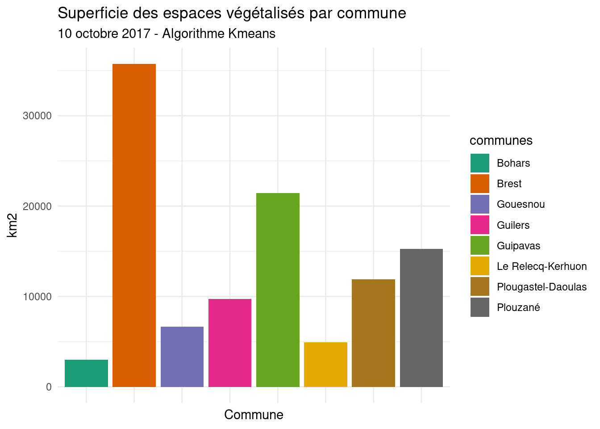

Travaux dirigés réalisés par Olivier Gillet et Yvette Vaguet
Objectifs du TD n°4
- Apprendre à classifier des images satellitaires selon une approche non supervisée et comprendre le fonctionnement d’une classification automatique.
- Réaliser une cartographie et quelques statistiques des résultats
Le TD va se dérouler en 3 temps :
1 - Télécharger les données Sentinel-2 sur la plateforme Universitice
2 - Classifier selon une méthode non supervisée des images satellitaires via le plugin SAC
3 - Cartographier et analyser les résultats
Sentinel-2 (S2)
L’ESA, via le programme Sentinel, vise à déployer toute une série de satellites d’observation de la Terre (les premiers lancements ont eu lieu en 2015 et 2017). Le principal objectif du programme est de fournir aux pays européens des données complètes et actualisées leur permettant d’assurer le contrôle et la surveillance de l’environnement.

Satellite Sentinel-2A
1 - T√©l√©charger les images S2-A üõ∞
Vous devez vous rendre sur Universitice et télécharger le jeu de données à télécharger est le suivant :
TD 4 - Donnees S2-A (2017, 14 bandes spectrales)
Le jeu de données est composé d’une seule scène et vous disposez de l’ensemble des bandes spectrales.
Pour rappel, les images satellitaires se caractérisent par une information panchromatique, multi- ou hyper-spectrales. Le nombre de bandes spectrales et les intervalles de longueur d’onde de ces dernières diffèrent selon le satellite et les capteurs utilisés. Les bandes spectrales à disposition sont les suivantes :
| Caractéristiques S2-A | ||
| Bande spectrale n°1 - Aérosol côtier | 442.7 nm | 60 m |
| Bande spectrale n°2 - Bleu | 492.4 nm | 10 m |
| Bande spectrale n°3 - Vert | 559.8 nm | 10 m |
| Bande spectrale n°4 - Rouge | 664.6 nm | 10 m |
| Bande spectrale n°5 - Végétation red edge | 704.1 nm | 20 m |
| Bande spectrale n°6 - Végétation red edge | 740.5 nm | 20 m |
| Bande spectrale n°7 - Végétation red edge | 782.8 nm | 20 m |
| Bande spectrale n°8 - PIR | 832.8 nm | 10 m |
| Bande spectrale n°8A – PIR étroit | 864.7 nm | 20 m |
| Bande spectrale n°9 - Vapeur d’eau | 945.1 nm | 60 m |
| Bande spectrale n°10 - SWIR – Cirrus | 1373.5 nm | 60 m |
| Bande spectrale n°11 - SWIR | 1613.7 nm | 20 m |
| Bande spectrale n°12 - SWIR | 2202.4 nm | 20 m |
üíª Lien pour √† la plate-forme de donn√©es MSG et autres :
https://scihub.copernicus.eu/dhus/#/home https://earthexplorer.usgs.gov/
Plate-forme de téléchargement des données S2-A
üìÜ La date d‚Äôacquisition de l‚Äôimages satellitaire est la suivante :
- 25 mai 2017 11h21
❓ Quelle est la résolution spatiale de mes images ?
2 - Télécharger le plugin SAC et ProfilTool
QGIS n’est pas un logiciel de traitement d’images comme IDRISI ou ENVI. Pour classifier graphiquement des images satellitaires via le Système d’Information Géographique (SIG, QGIS), nous devons installer un plugin “Semi-Automatic Classification”. Ce premier plugin open-source a été développé par Luca Congedo pour la classifier des images satellitaires. L’outil est très complet car il fournit des outils de téléchargement, de pré/post traitements des images.
Pour le télécharger, après ouverture du SIG QGIS, vous devez vous rendre sur la fenêtre “Installer/Gérer les extensions” et installer le plugin “Semi-Automatic Classification”:
Extensions -> Installer/Gérer les extensions

Plugin ’Semi Automatic Classification
3 - Créer un jeu de données depuis le plugin
SCP -> Pré-traitement -> Sentinel-2
Créer un jeu de données Sentinel-2 depuis le plugin
L’algorithme de pré-traitement des données affiche les bandes spectrales dans QGIS après son exécution. Vous pouvez également réaliser des compositions colorées “vraies et fausses” couleurs directement dans la barre d’outils.
Afficher les données dans QGIS
Les algorithmes de classification non supervisées
La classification, manuelle ou automatique, a pour objectif d’assigner une classe particulière à chacun des pixels d’une scène (surface en eau, surface végétalisée ou sol nu par exemple). Cette classification, ou typologie, est une mosaïque de pixels qui appartiennent chacun à une classe d’occupation du sols. Celle-ci peut être plus ou moins complexe (nombre de classe, caractérisation des objets observés, ..).
Pour rappel, les images satellitaires sont des images numériques que l’on peut exploiter à travers des traitements statistiques et/ou mathématiques afin de calculer des indicateurs ou de les classifier. Tous pixel sont caractérisés par un vecteur de valeur numérique. La longueur de se vecteur dépend du nombre de bandes spectrales de l’image. Ainsi, et en fonction des vecteurs de valeurs, des groupes de pixels qui ont les mêmes caractéristiques (ou presque) peuvent être classé dans une classe d’information. Les pixels réunis au sein de ces différentes classes d’une typologie ont des caractéristiques radiométriques communes et correspondant donc à des objets géographiques similaires ou très proches.
On parle de partitionnement de données ou de clustering.
La définition sur wikipedia:
Le partitionnement de données (ou data clustering en anglais) est une méthode en analyse des données. Elle vise à diviser un ensemble de données en différents « paquets » homogènes, en ce sens que les données de chaque sous-ensemble partagent des caractéristiques communes, [..]. Pour obtenir un bon partitionnement, il convient d’à la fois :
- minimiser l’inertie intra-classe pour obtenir des grappes (cluster en anglais) les plus homogènes possibles ;
- maximiser l’inertie inter-classe afin d’obtenir des sous-ensembles bien différenciés.
Ces algorithmes (isodata ou kmeans par exemple) se basent sur la distance mathématique entre les entités/pixels/individus d’un jeu de données dans un espace à N dimension afin de les classer.
Algorithme Kmeans
⚠️ Rappel CM de Mme Vaguet.
Données en entrée : n points placés dans un référentiel en d dimensions
Où n = nombre de pixels dans l’image
d = nombre de bandes spectrales utiliséesPlacement aléatoire de x centroïdes dans le référentiel
Où x = nombre de classes, défini par l’opérateurOn associe à chaque point le centroïde le plus proche. Cette opération forme des clusters.
On calcule le centre de gravité de chaque cluster.
Pour chaque cluster, on déplace le centroïde sur le centre de gravité.
On recalcule les distances entre les points et leur centroïde le plus proche.
On recalcule le centre de gravité de chaque cluster.
On déplace le centroïde des clusters vers leur centre de gravité.Et ainsi de suite jusqu’à ce que la position du centroïde soit égale à la position du centre de gravité du cluster.

1 - Réaliser la classification sous QGIS
SCP -> Traitement de bande -> Clustering
⚠️ Vous devez fixer trois paramètres avant d’exécuter l’algorithme :
- le nombre d’itérations
- le nombre de classes
- et la condition d’arrêt (non obligatoire)
Pour la première exécution, laissez les paramètres par défaut.
Configurer l’algorithme de clustering
Visualiser les résultats de la classification
2 - Reclassifier le raster afin d’extraire les surfaces végétatlisées puis découper le raster.
Vous avez deux outils à votre disposition pour classifier à nouveau les rasters :
- la calculatrice raster (cf. TD2)
- l’outil du plugin, l’outil “reclassification”
SCP -> Post-traitement -> reclassification
Configurer l’algorithme de reclassification

Visualiser les résultats de la reclassification
3 - Calcul de la superficie des espaces végétalisés par commune
üìä Voici un exemple de r√©sultat attendu

‚ùì Vous devez r√©aliser la classification Kmeans pour les images üõ∞